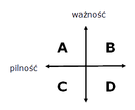

Ciasto - pieniądz
Warsztaty z zarządzania czasem
Autor: Marcin Stożek / marcin.stozek@gmail.com
Porządek musi być: agenda
- O czym będziemy rozmawiali
- "Jak organizować czas" Lothar J. Seiwert
- "Zen To Done" Leo Babauta
Ile masz czasu?
Oczywistość: każdy ma tyle samo czasu.
24 godziny na dobę, 7 dni w tygodniu.
Ale ile TY masz czasu?
Czym się zajmujesz?
Jakie aktualnie prowadzisz przedsięwzięcia?.
W domu, szkole, harcerstwie...
Czym chciałbyś się zajmować?
Jak przeżyć w świecie, w którym możesz zrobić wszystko?
Jak sobie nie pomagać?
“Pochwalenie się planem zmniejsza szanse na jego ukończenie”
TED lub wpis na blogu.
Metody zarządzania czasem
Krótkie zapytanie w Google daje 795000 wyników po polsku
- Getting Things Done
- Zen To Done
- Alpen
- Pomodoro
- ...
Różni ludzie, różne potrzeby
Wybrałem tylko takie rozwiązania, które sprawdziłem na własnej skórze.
Dla innych mogą być nietrafione.
"Jak organizować czas"
Lothar J. Seiwert
Wykorzystaj czas
- czas jest wart więcej niż pieniądz
- czas nie daje się rozmnożyć
- gospodaruj swoim czasem
- znajdź czas na rzeczy, które są ważne
Złodzieje czasu
- internety
- niekonkretne spotkania
- odkładania na później
- niezlecanie zadań innym
- nieodmawianie innym
Mind-map: sieć uwikłań czasowych
- twoja sytuacja życiowa
- ile masz aktywności "stałych"
- na czym spędzasz najwięcej czasu
Określanie celów
Po co robisz to, co robisz?
- (Sam) Wytyczaj sobie cele - marzenia życiowe
- Jasno zdefiniuj swoje cele prywatne i zawodowe
- Planowanie według Kartezjusza - "taktyka salami"
- Zasada Pareta - reguła 80:20
Określanie celów
Ale czy tak się da planować?
- "taktyka salami" - Kartezjusz się zestarzał
- w IT triumfy święci Agile i Kanban
- nie bój się zmieniać swoich celów
Planowanie na piśmie
- co z oczu to z głowy (nie mylić z "co z oczu to z serca")
- nie zaśmiecaj sobie głowy
- planowanie to zysk na czasie... ale nie zawsze
Plany dnia
- zaplanowanie każdego dnia
- moim zdaniem to nierealne - sprawy stare, nowe, telefony
- ustal sobie limit czasu
- wyeliminuj przeszkadzacze
Priorytety
- załatwiaj jedną rzecz naraz
- analiza A-B-C (65% 20% 15%)
- załatwiaj najważniejsze sprawy
Działaj pozytywnie
- zrób codziennie coś pozytywnego
- wysypiaj się
- bądź sprawny fizycznie
- spędzaj czas z rodziną, przyjaciółmi
- realizacja celów sprawia przyjemność
Krzywa wydajności
- kiedy jesteś najbardziej wydajny?
- rób przerwy
- dotleniaj się
Godzina spokoju
- zapewnij sobie czas na nieprzerwaną pracę
- "efekt piły" - nie daj się wybijać z rytmu
- spotkanie z samym sobą
- traktuj to jak ważne spotkanie
Zlecanie innym
- nie bój się zlecać
- daj innym szansę się wykazać
- zlecaj świadomie
- zlecaj konkretnie (co? jak? na kiedy?)
Matryca Eisenhowera

- A: pilne i ważne - zrób natychmiast
- B: niepilne i ważne - ustal termin lub wydeleguj
- C: pilne i nieważne - wydeleguj
- D: niepilne i nieważne - do śmieci
Samodyscyplina
- czas daje się zarządzać, ale...
- ... musisz być konsekwentny
Zen To Done
The Ultimate Simple Productivity System
by Leo Babauta
GTD vs ZTD
- ZTD czerpie inspiracje z GTD Davida Allena
- Próbuje poprawić GTD
- jeden nawyk na raz
- większy nacisk na "robienie"
- ustrukturyzowanie
- upraszczanie
- skupienie na ważnych sprawach
- Dodaje kilka technik z innych metod
10 nawyków ZTD
- skup się na jednym przez 30 dni
- kolejność prawie nie ma znaczenia
- wybierz te, które działają dla ciebie
Gromadzenie
nawyk: ciągłe zbieranie
- wyrzucaj pomysły z głowy
- notuj w jakiejś formie
- notatnik
- smartfon
- przegub nadgarstka
- stwórz najprostszą listę zadań
Przetwarzanie
nawyk: podejmuj decyzje w sprawie swoich "inboxów"
- Idea "Inbox zero"
- przetwórz swoje notatniki
- < 2 minuty - zrób od razu
- wyrzucaj
- deleguj
- archiwizuj
- wrzuć do listy zadań
- zapisz w kalendarzu
- wyczyść biurko

Planowanie
nawyk: ustawiaj zadania na dzień, tydzień
- wybieraj najważniejsze zadania na najbliższy tydzień
- wybieraj po 3 zadania na każdy dzień i je zrealizuj
- realizuj te zadania jako pierwsze każdego dnia
Działanie (w skupieniu)
nawyk: wykonuj jedno zadanie na raz, bez przeszkadzaczy
- wyłącz telefon / komputer - jeżeli się da
- skup się na zadaniu tak długo jak tylko możliwe
- ustaw sobie czasomierz
- jeżeli coś ci przeszkodzi - zapisz to i wróć później
- rób jedną rzecz na raz
Prosty i zaufany system
nawyk: stwórz proste listy i sprawdzaj je codziennie
- konteksty - @praca, @dom, @czekające, @kurs-phm
- nie przekombinuj - choć to kuszące
- notatnik / parę kartek / smartfon
Porządkowanie
nawyk: niech wszystko ma swoje miejsce
- wszystko wpada do "inboxa"
- stamtąd do innych list, śmietnika, itd.
- nie odkładaj przetwarzania na później
Przegląd
nawyk: zrób cotygodniowy przegląd swoich celów
- co tydzień przejrzyj swoje cele roczne
- co miesiąc przejrzyj swoje cele roczne
- co rok przejrzyj swoje cele roczne
Upraszczanie
nawyk: uprość swoje cele i zadania
- wyrzucaj, wyrzucaj, wyrzucaj
- uprość swoje zobowiązania
- zostaw tylko to, co najważniejsze
- zadania a cele życiowe
Nawyki
nawyk: stwórz i utrzymaj swoje zwyczaje
- rutyna może pomóc wystartować
- poranna rutyna:
- kalendarz
- listy kontekstowe
- wybranie zadań na dzisiaj
- wykonanie najważniejszych zadań
- spróbuj rutyn, które zadziałają dla ciebie
Znajdowanie pasji
nawyk: wyszukuj prac, które będą pasją
- jeżeli lubisz zadanie, nie zmuszasz się do jego wykonania
- jeżeli lubisz pracę, masz ochotę pracować więcej
- ciągle poszukuj tego, co chcesz robić w życiu..
- ...i rób to - lista zadań będzie nagrodą
Narzędzia
Offline
- notatnik
Online
Pytania
Koniec
Marcin Stożek / marcin.stozek@gmail.com